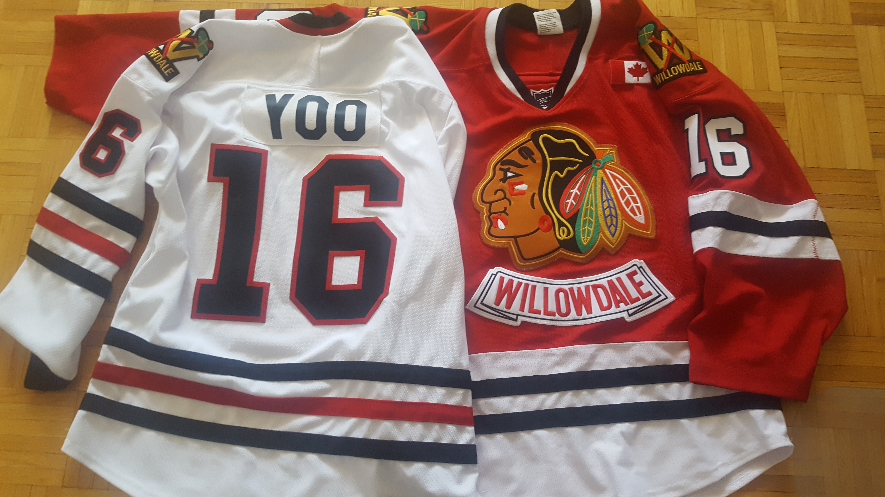

| Sports! |
|---|
On this page, I will be talking about my favourite sports and my favourite teams!
 Hockey: I have been a fan of hockey for almost my whole life now. I originally began skating at a very young age, when I was around 6 years old. I enjoyed skating but one day, my dad introduced me to the sport of hockey! I watched hockey on TV for the first time, and the team I was watching was the Toronto Maple Leafs! On top of cheering for the Maple Leafs, I also played hockey and still do, despite COVID-19, ruining the season last year. On the left you can see a picture of my jerseys with my name, which I wear while playing for the Willowdale Blackhawks
Track: Since a young age, I've always liked running, and still do it to calm me down or for exercise on a daily basis. I have represented my schools in the 400 metres, 800 metres, and cross country races for a while now. I do prefer long distances over short distance running as I like to pace myself and find it easier than bursts of speed. Long distance running is a lot more fun in my opinion. I often go for runs at sunrise or near sunset to start or end days. Running is a lot more fun that you may think!
Badminton: Badminton is an activity I do for fun,and I have grown up playing this outside with family and friends. I enjoy all sorts of racket games with tennis being the one I'm best at. Badminton is easy to set up and playable nearly anywhere and is just a good fun game that I enjoy playing!